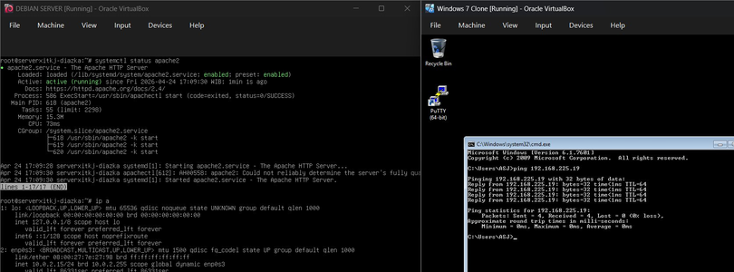
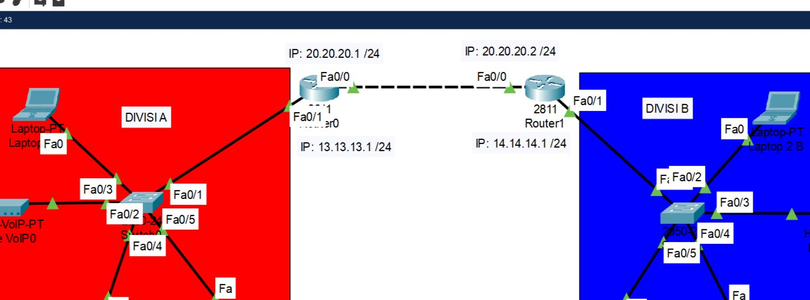
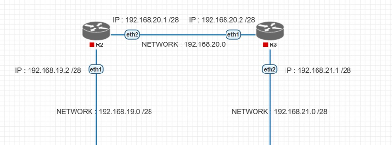

Proyek & Karya
Kumpulan proyek, lab, dan dokumentasi yang pernah saya kerjakan.
Platform Saya
Proyek Pilihan

Administrasi Server Jaringan (ASJ)
Konfigurasi Linux Debian sebagai server jaringan menggunakan VirtualBox,
mencakup instalasi, manajemen user, dan pengaturan layanan dasar.

Teknik Jaringan Kabel dan Nirkabel
Merancang dan mengimplementasikan topologi jaringan kabel & nirkabel, termasuk
pemasangan kabel Fiber Optic dan konfigurasi jaringan Wireless menggunakan
Cisco Packet Tracer & PNETLab.

Pemasangan dan Konfigurasi Perangkat Jaringan
Melakukan konfigurasi perangkat jaringan via CLI MikroTik RouterOS, mencakup
pengaturan IP Address, DHCP Server, dan manajemen koneksi antar jaringan.